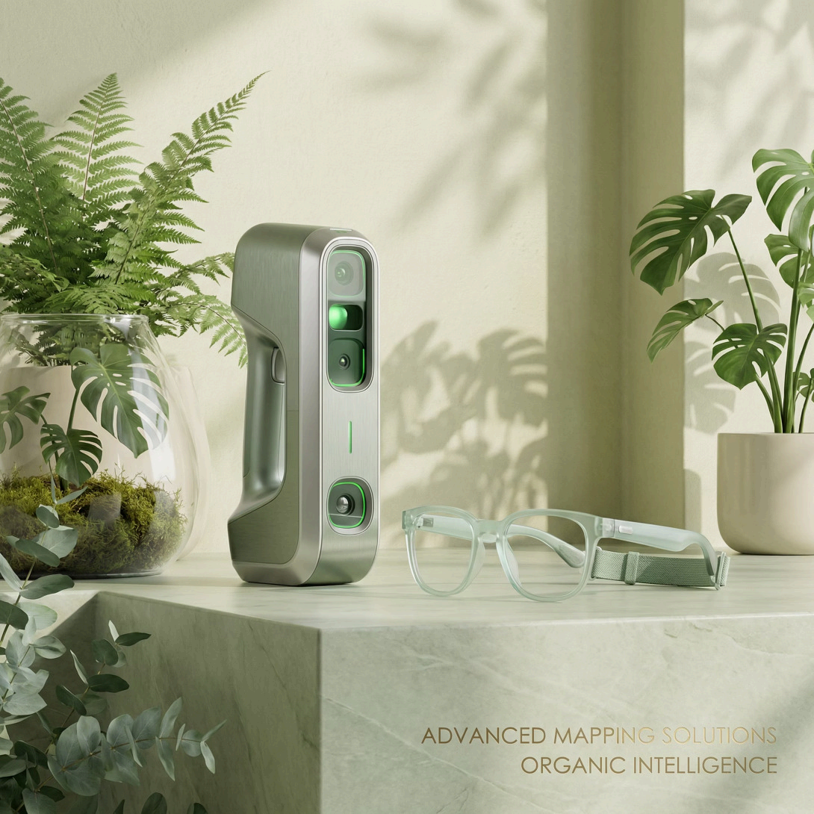
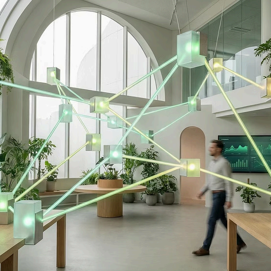
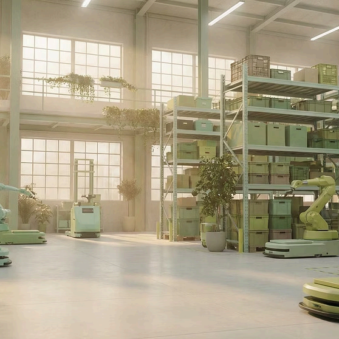

Business Pillars
四大事業領域 — 協同共生のエコシステム
UTの事業体系は孤立したプロダクトラインではなく、相互にエンパワーメントするエコシステムの循環です。法務基盤がすべての事業のコンプライアンスを支え、データとAI能力が各セクターに技術力を提供します。
法務・財務サービス
Legal & Financial Services
行政書士法人＋税理士法人の二重資格体制により、ビザ申請、法人設立、税務、法律顧問、資産配置まで全周期型サービスを提供。クロスボーダー企業の日本進出における競合が模倣困難な差別化基盤を構築。
- 経営管理ビザ申請
- 法人設立・税務代理
- 資産管理・財務計画
- コンプライアンス審査
データ解析・IT開発
Data & IT Solutions
創業以来の中核事業。AIを活用した動画データ解析、ITシステム開発、クラウドマイグレーション、システムアーキテクチャ設計・運用保守まで、デジタル運営を全方位的にサポート。
- AI動画データ解析
- ITシステム開発
- クラウド移行
- デジタル運営支援
新規事業部・ディープテック・インキュベーション
Deep Tech Incubation
SPACE 9バーチャルアクセラレーターを中核に、ヒューマノイド・ロボティクス、3D SLAMスキャナー、メタバース＆Web3イノベーションなど、次世代技術の事業化を推進。
- SPACE 9 アクセラレーター
- Tokyo Mini Land
- 先端医療連携
- ロボティクス・3D SLAM
AIコマース対外投資
AI Commerce Investment
2026年6月正式始動。6年間蓄積したデータ資産、クロスボーダー実務ノウハウ、日本市場における運営基盤を活かし、AIを活用した次世代クロスボーダー・バリューチェーンを構築。
- AI駆動EC最適化
- 越境物流連携
- 決済インフラ統合
- データ横断運営基盤

Asian Ecosystem


エンパワーメント基盤 — 4大支援プラットフォーム
イノベーションの発掘から事業化、資本市場へのアクセスまで、4つのプラットフォームが一貫したエコシステムとして機能します。
SPACE 9
アクセラレーター＆コミュニティ
分散型イノベーション協業ネットワーク。コアテクノロジープロジェクトの実装推進とクロスボーダーリソースの連携を支援。
AIS
アジア・イノベーション・サミット
国際的な情報発信とマッチングプラットフォーム。優れたインキュベーションプロジェクトに、多国籍企業との連携とブランド価値向上の機会を提供。
AIRC
アジア・イノベーション・リサーチセンター
データ支援と産業評価。シンクタンクの知見を活かし、資本運用や戦略策定にデータ根拠を提供。
Tokyo Mini Land
リアル・インキュベーション拠点
若手起業家とクリエイティブプロトタイプのインキュベーションを主導する実体空間。早期段階の事業に対し、東京における物理的な拠点とコミュニティを提供します。
ディープテック
フロンティアテクノロジーベンチャーズ
先進技術を市場へ展開
当社は、変革をもたらす可能性を秘めた画期的な技術を特定し、アジア市場全体での現地化と商業的拡大を成功させるために必要な戦略的サポートを提供しています。
当社の取り組みは、技術的専門知識と市場情報を組み合わせたもので、知的財産保護と戦略的ポジショニングを通じて、イノベーションが実用化され、競争上の優位性を維持できるよう努めています。
AIインテリジェント端末

高精度3Dスキャンと人工知能アプリケーションの進歩を、現地市場への適応と戦略的パートナーシップ開発を通じて推進しています。
エンボディドAIとロボティクス
高度なヒューマノイドロボットハンド技術の産業化を、包括的なサービス調整によってサポートしています。
デジタルイノベーションポートフォリオ
グローバルな信頼ネットワークを活用し、真の可能性を秘めたベンチャー企業がアジア市場で有意義な存在感を確立できるよう支援し、革新的なデジタルアプリケーションに焦点を当てています。

Web3イノベーションアプリケーション
分散型テクノロジーとデジタルリスク管理フレームワークの深い統合を探求し、信頼と価値交換の新たなパラダイムを創造しています。
クロスボーダーライフスタイルサービス
革新的なサービス提供モデルを通じて、日常生活のニーズに対応する包括的な地域エコシステムを構築しています。

インテリジェント貿易経路
デジタル化を通じて国境を越えたサプライチェーンを最適化し、市場全体で効率的な商業的実装を可能にしています。